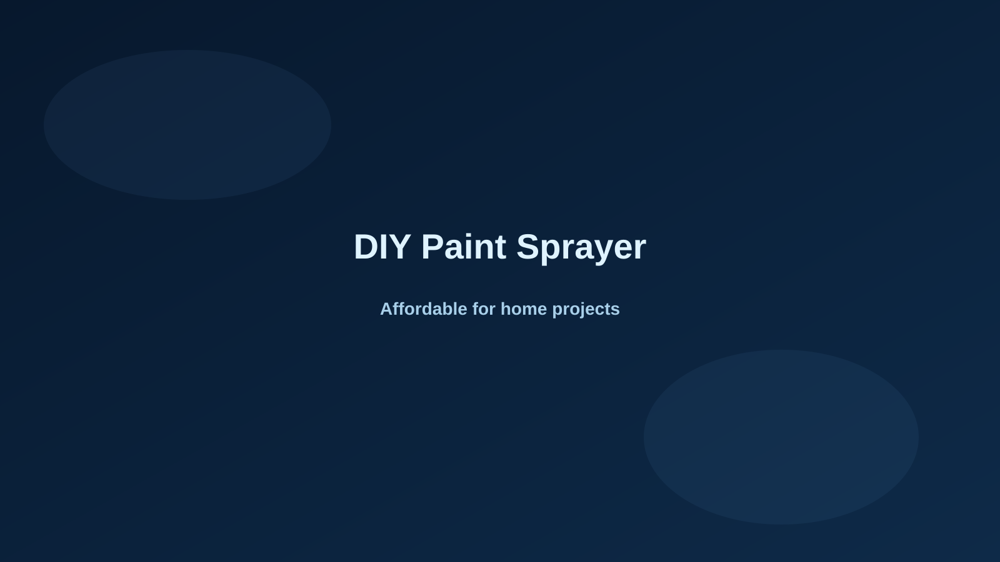

OEM manufacturing lets distributors build a product line that reflects their brand, market requirements, and packaging needs.
Customize what matters
Machine branding, color, packaging, and product configuration can be tailored for your business.
From sample to shipment
Gutubao supports the process from product selection and sample confirmation through production and delivery.
Contact Gutubao